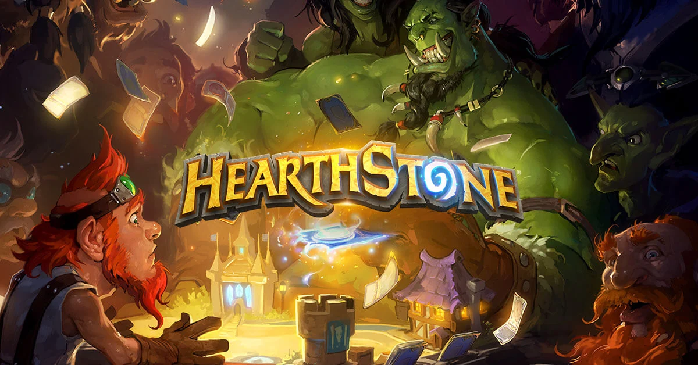

炉石传说：随机性如何变成策略
文章目录

《炉石传说》里的随机性在我看来几乎是完美的。这款游戏的核心是深度策略，但它没有把策略和随机分开，而是把两者紧紧绑在一起。随机不是加在策略之上的，而是嵌在每一个策略决策之内的。这种设计让我在根据变化动态调整策略时获得很强的满足感。它要求的持续思考完全占住了我的大脑，也让这个游戏极其上瘾。
1. 随机是受控的可能性（以随从为例）
在《炉石传说》里，随机很少是不受控的。很多随从效果都用到随机，但总是在清晰的边界之内。比如一个随从可能对一个随机敌方随从造成伤害，召唤一个特定费用的随机随从，或者把一个随从变形为同费用的另一个随从。虽然确切结果不确定，但可能的结果范围是明确的。
因此，当我打出这些随从时，我通常知道“可能发生什么”，哪怕不知道“会发生什么”。我不是在盲猜。我是基于一个已知的结果范围做策略选择。这把随机变成了关于风险的决策，而不是关于运气的赌博。
2. 偏向长期思考的数值（场面状态重于单次结果）
炉石里的随机随从效果，其价值来自长期优势，而不是某一次完美的结果。一个造成随机伤害的随从不一定每次都打中理想目标，但在很多局里，在正确的时机使用它往往带来正收益。
比如，当对手场上有多个低血量随从时打出随机伤害随从，好结果的概率就更高。这奖励的是理解场面的玩家，而不是指望完美运气的玩家。策略变成了关于时机和概率的事，这让我在整局里都保持思考。
3. 随机发生在玩家选择之后（打出随从本身就是决策）
炉石一个关键的设计细节是：随机通常发生在玩家做出承诺之后。我决定什么时候打出随从、要不要先交换、投入多少法力。只有在我做完这些决定之后，随机效果才触发。
比如，如果我要打一个攻击随机敌人的随从，我可以先解掉危险目标，或者减少可能的敌人数量。随机结果可能仍然不可预测，但导向它的局面是我的选择创造的。这让结果即使不理想，也有一种“是我挣来的”的感觉。
4. 迫使持续的策略调整（随从改变场面，而不是结束游戏）
大多数随机随从效果不会立刻决定胜负。它们改变的是场面状态：改变生命值、移除或创造随从、改变节奏。每一个变化都创造出一个需要新计划的新局面。
当随机效果产生意外结果时，我必须快速重新评估：该进攻、该防守，还是该攒资源。这种不断适应的需求很刺激。策略不会在一次决策后停下，它随着场面演变而持续。
5. 奖励学习的系统（了解随从池）
炉石的随机之所以成立，是因为它存在于一个可学习的系统里。当一个随从召唤或变形成另一个随从时，它从一个由当前扩展包和环境塑造的已知卡池里抽取。久而久之，我会学到哪些随从可能出现，哪些结果危险、哪些安全。
这些知识直接改善了我的决策。我不只是在对随机做情绪反应，而是在基于经验主动预测结果。这个学习过程强烈地调动了我的大脑，让每一局都有意义。
6. 通过数值产生情感投入（随从翻盘与逆转）
随机随从效果经常制造戏剧性的场面翻转。一次幸运或不幸的结果可以改变整局的走向，但因为这些效果都绑在玩家决策上，情绪是有正当性的。随机效果对我有利时，我觉得是奖励；失败时，我通常能看到自己本可以怎样打得不同。
这种惊喜与责任之间的平衡让我保持情感投入，又不会觉得被坑。它鼓励反思而不是挫败，这让我想继续玩下去。
《炉石传说》证明了随机不会削弱策略。通过仔细的数值调校和随从效果设计，随机成了策略玩法的核心部分。把不确定性嵌进每一个决策，游戏持续地挑战玩家去适应。这种脑力挑战完全占住了我的大脑，也是这个游戏让我觉得如此满足、如此上瘾的原因。